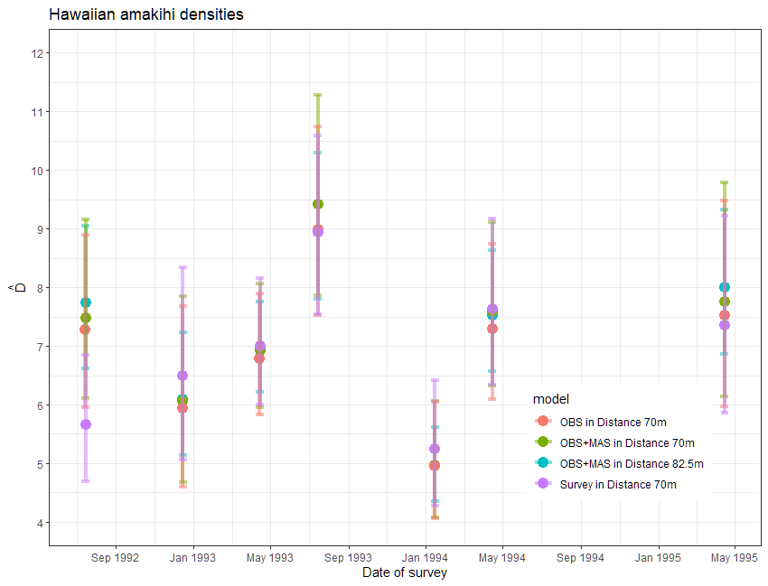

library(Distance)
data(amakihi)Covariates in the detection function solution
Solution
Covariates in the detection function
Covariates in point transect detection functions: Amakihi
hist(amakihi$distance, xlab="Radial distances (m)", main="Amakihi point transect data.")A truncation distance of 82.5 m was chosen by T. A. Marques et al. (2007).
Plots of the covariates were generated. Not surprisingly, MAS and HAS are correlated and so we need to be cautious of including them in the same model.
boxplot(amakihi$distance~amakihi$OBs, xlab="Observer", ylab="Distance (m)")
boxplot(amakihi$distance~amakihi$HAS, xlab="Hour", ylab="Distance (m)")
plot(x=amakihi$MAS, y=amakihi$distance, xlab="Minutes after sunrise",
ylab="Distance (m)", pch=20)
plot(x=amakihi$HAS, y=amakihi$MAS, xlab="Hours after sunrise",
ylab="Minutes after sunrise", pch=20)


Some rearrangement of the covariates, relevel simply shuffles the order of the observer and hour after sunrise factor covariates to conform to the analysis as presented in T. A. Marques et al. (2007).
amakihi$HAS <- factor(amakihi$HAS)
amakihi$OBs <- relevel(amakihi$OBs, ref="TKP")
amakihi$HAS <- relevel(amakihi$HAS, ref="5")The model selected by T. A. Marques et al. (2007) used a hazard rate key function and included observer and minutes after sunrise (treating time as a continuous rather than discrete covariate)- this model is fitted below. The PDF plot is shown.
# Fit model selected by Marques et al (2007)
conv <- convert_units("meter", NULL, "hectare")
amak.hr.obs.mas <- ds(amakihi, transect="point", key="hr", formula=~OBs+MAS, convert_units = conv,
truncation=82.5)
plot(amak.hr.obs.mas, showpoints=FALSE, main="Amakihi Observer and Minutes", pdf=TRUE)
sfzero <- data.frame(OBs="SGF", MAS=0)
sf180 <- data.frame(OBs="SGF", MAS=180)
t1zero <- data.frame(OBs="TJS", MAS=0)
t1180 <- data.frame(OBs="TJS", MAS=180)
t2zero <- data.frame(OBs="TKP", MAS=0)
t2180 <- data.frame(OBs="TKP", MAS=180)
add_df_covar_line(amak.hr.obs.mas, data=sfzero, lty=1, lwd=2,col="blue", pdf=TRUE)
add_df_covar_line(amak.hr.obs.mas, data=sf180, lty=2, lwd=2,col="blue", pdf=TRUE)
add_df_covar_line(amak.hr.obs.mas, data=t1zero, lty=1,lwd=2,col="red", pdf=TRUE)
add_df_covar_line(amak.hr.obs.mas, data=t1180, lty=2, lwd=2,col="red", pdf=TRUE)
add_df_covar_line(amak.hr.obs.mas, data=t2zero, lty=1,lwd=2,col="green", pdf=TRUE)
add_df_covar_line(amak.hr.obs.mas, data=t2180, lty=2, lwd=2,col="green", pdf=TRUE)
legend("topright", legend=c("SF, minutes=0",
"SF, minutes=180",
"TS, minutes=0",
"TS, minutes=180",
"TP, minutes=0",
"TP, minutes=180"),
title="Covariate combination: observer and minutes",
lty=rep(c(1,2),times=3), lwd=2, col=rep(c("blue","red","green"), each=2))
Cautionary tale
A second round of model criticism
The model chosen by T. A. Marques et al. (2007) for making inference included minutes after sunrise (MAS) and observer (OBS) as covariates in the detection function. Did that model produce estimates of detection probability that were small for some detections? Recall, because we are using a Horwitz-Thompson-like estimator, our estimates of abundance are quite sensitive to detections with small values of \(\widehat{P_a(z_i)}\). Detections with small \(\widehat{P_a(z_i)}\) can have quite large impacts upon population estimates.
A new function in the most recent version of the Distance package, permits examination of the distribution of the \(\widehat{P_a(z_i)}\) so we can assess whether this analysis guideline is violated:
consider reducing the trunction distance if more than 5% of the \(\widehat{P_a(z_i)}\) are < 0.2, or if any are less than 0.1
p_dist_table(amak.hr.obs.mas, proportion = TRUE)| p | count | proportion |
|---|---|---|
| 0 - 0.1 | 0 | 0.000 |
| 0.1 - 0.2 | 167 | 0.134 |
| 0.2 - 0.3 | 106 | 0.085 |
| 0.3 - 0.4 | 515 | 0.414 |
| 0.4 - 0.5 | 455 | 0.366 |
| 0.5 - 0.6 | 0 | 0.000 |
This suggests redoing the analysis with stronger truncation. I’ll repeat the model fitting (without showing the code) using 70m as the truncation distance. What do we see when examining the distribution of the \(\widehat{P_a(z_i)}\) with the more stringent truncation?
| p | count | proportion |
|---|---|---|
| 0 - 0.1 | 0 | 0.000 |
| 0.1 - 0.2 | 0 | 0.000 |
| 0.2 - 0.3 | 207 | 0.184 |
| 0.3 - 0.4 | 48 | 0.043 |
| 0.4 - 0.5 | 678 | 0.603 |
| 0.5 - 0.6 | 191 | 0.170 |
Should this much truncation cause concern for point estimates and precision?
The news that model criticism should start over with a new truncation distance would not be good news. Concerns might also creep into your heads that removing data might affect the point estimates and possibly the precision. In this case, moving the truncation distance from 82.5m to 70m removed only 1.5% (19) detections, so it is unlikely that precision was affected.
Regarding the effect upon the point estimates of amakihi density, let’s take a step back. If you were to examine the point and interval estimates for this data set from a number of detection function models, you would find the estimates are robust to model choice.

My impression
For this data set, the effort expended in discriminating between models with one vs two covariates as well as the angst about truncation distances had imperceptible effects upon the survey-specific density estimates. In fact, a model simply using survey replicate as a covariate produced largely the same density estimates. Understanding the temporal dynamics of the amakihi population was not influenced by covariate modelling.
More MCDS with line transects: ETP dolphins (optional)
We have not provided a comprehensive analysis of these data but have highlighted a few general feature of these data. A more complete analysis can be found in F. F. C. Marques & Buckland (2003).
data(ETP_Dolphin)
head(ETP_Dolphin, n=3) Region.Label Area Sample.Label Effort object distance LnCluster Month
1 Default 0 1 1 1 2.25 6.792344 6
2 Default 0 1 1 2 3.15 7.080868 6
3 Default 0 1 1 3 3.00 5.181784 6
Beauf.class Cue.type Search.method size Study.Area
1 2 3 0 891 Dolphin
2 2 1 2 1189 Dolphin
3 2 1 2 178 DolphinETP_Dolphin_units[,1:2] Variable Units
1 Effort nautical mile
2 distance nautical mile
3 Area square nautical mileNotice that effort and perpendicular distances are both measured in nautical miles and that density is to be reported in animals per square nautical mile, so the conversation factor in this case is 1 and we do not represent it here.
To obtain an overall impression of the data, it is useful to fit a histogram with many intervals.
hist(ETP_Dolphin$distance, nclass=50, xlab="Distance (nm)",
main="Tropical Pacific dolphin survey perpendicular distances")The spikes in the histogram suggest that distances have been rounded to zero and possibly other values. To mitigate these problems, the distances could be binned although we do not do so in the analysis below. The distances have already been truncated at 5 nm and so we will not truncate distances further.
boxplot(ETP_Dolphin$distance~ETP_Dolphin$Search.method, xlab="Search method",
ylab="Distance (nm)")
boxplot(ETP_Dolphin$distance~ETP_Dolphin$Cue.type, xlab="Cue", ylab="Distance (nm)")
boxplot(ETP_Dolphin$distance~ETP_Dolphin$Beauf.class, xlab="Beaufort class",
ylab="Distance (nm)")
boxplot(ETP_Dolphin$distance~ETP_Dolphin$Month, xlab="Month", ylab="Distance (nm)")


To decide whether to fit a half normal or a hazard rate key function, each of these is tried in turn.
etp.hn <- ds(ETP_Dolphin, key="hn", adjustment=NULL)
etp.hr <- ds(ETP_Dolphin, key="hr", adjustment=NULL)
knitr::kable(as.data.frame(AIC(etp.hn, etp.hr)),
table.attr = 'data-quarto-disable-processing="true"') %>%
kable_styling(bootstrap_options = "condensed", full_width = F) | df | AIC | |
|---|---|---|
| etp.hn | 1 | 3377.489 |
| etp.hr | 2 | 3365.915 |
The AIC values suggest that hazard rate key function is preferable to the half normal and so this will be used as the key function in the MCDS models. Each covariate is introduced in turn.
etp.hr.search <- ds(ETP_Dolphin, key="hr", formula=~factor(Search.method))
etp.hr.cue <- ds(ETP_Dolphin, key="hr", formula=~factor(Cue.type))
etp.hr.bf <- ds(ETP_Dolphin, key="hr", formula=~factor(Beauf.class))
etp.hr.month <- ds(ETP_Dolphin, key="hr", formula=~factor(Month))
knitr::kable(summarize_ds_models(etp.hr, etp.hr.search, etp.hr.cue, etp.hr.bf, etp.hr.month,
output="latex")[,2:7], row.names = FALSE,
table.attr = 'data-quarto-disable-processing="true"',
caption="ETP dolphin model selection.", digits=3) %>%
kable_styling(bootstrap_options = "condensed", full_width = F) | Key function | Formula | C-vM p-value | $\hat{P_a}$ | se($\hat{P_a}$) | $\Delta$AIC |
|---|---|---|---|---|---|
| Hazard-rate | ~factor(Search.method) | 0.388 | 0.584 | 0.036 | 0.000 |
| Hazard-rate | ~factor(Cue.type) | 0.449 | 0.587 | 0.039 | 23.314 |
| Hazard-rate | ~factor(Month) | 0.494 | 0.593 | 0.039 | 24.264 |
| Hazard-rate | ~1 | 0.461 | 0.601 | 0.038 | 26.140 |
| Hazard-rate | ~factor(Beauf.class) | 0.474 | 0.601 | 0.039 | 27.993 |
Based on the AIC, it seems as though the model including search method was preferable and we could continue the model selection process by looking at models with two covariates. However, before going on it is worth looking at the search method model in more detail. If we look at the detection function parameters for this model:
print(etp.hr.search$ddf)
Distance sampling analysis object
Summary for ds object
Number of observations : 1090
Distance range : 0 - 5
AIC : 3339.775
Optimisation : mrds (nlminb)
Detection function:
Hazard-rate key function
Detection function parameters
Scale coefficient(s):
estimate se
(Intercept) 0.3355272 0.2072090
factor(Search.method)2 0.3208247 0.2112992
factor(Search.method)3 3.1274315 78.5965032
factor(Search.method)5 0.2430573 0.5378512
Shape coefficient(s):
estimate se
(Intercept) 0.07827832 0.1387482
Estimate SE CV
Average p 0.5837971 0.03602487 0.06170786
N in covered region 1867.0869397 121.18692980 0.06490696we see that the estimated scale coefficient for search method 3 is substantially larger than the estimated scale coefficients for other methods. The effect this has on the detection function is clearly seen in the detection function plot.
# Plot search method detection function
plot(etp.hr.search, pch=".")
Search method 3 indicated that the detection was from a helicopter and this detection function suggests that all dolphin schools out to 5 nm were being detected and so detection does not decrease as distance increases. One assumption of MCDS is that the perpendicular distance distributions of the covariate factor levels have the same shape and so it may be worth refitting the models but excluding the observations made by the helicopter.
Colourful plot noting effect of cue type
Just an example of using the function add_df_covar_line to visually explore consequences of covariates on the detection function. A regular call to plot() is first used to produce the histogram and average detection function line; subsequent calls to the new function with different values of the covariate of interest completes the plot.
plot(etp.hr.cue, main="ETP dolphin survey", showpoints=FALSE)
add_df_covar_line(etp.hr.cue, data = data.frame(Cue.type=1), col='red', lwd=2, lty=1)
add_df_covar_line(etp.hr.cue, data = data.frame(Cue.type=2), col='blue', lwd=2, lty=1)
add_df_covar_line(etp.hr.cue, data = data.frame(Cue.type=3), col='green', lwd=2, lty=1)
add_df_covar_line(etp.hr.cue, data = data.frame(Cue.type=4), col='purple', lwd=2, lty=1)
legend("topright", legend=c("Birds","Splashes","Unspecified","Floating objects"),
col=c("red", "blue", "green", "purple"), lwd=2, title = "Cue type")
More MCDS with point transects: Savannah sparrow (optional)
Recall, these are data from Colorado, described by Knopf et al. (1988). The question here was whether to include pasture as a covariate in the detection function. The biological question being, “does detectability of Savannah sparrows differ between the pastures in which the survey was conducted.”
data(Savannah_sparrow_1980)
head(Savannah_sparrow_1980, n=3) Region.Label Area Sample.Label Effort object distance Study.Area
1 PASTURE 1 1 POINT 1 1 NA NA SASP 1980
2 PASTURE 1 1 POINT 2 1 NA NA SASP 1980
3 PASTURE 1 1 POINT 3 1 NA NA SASP 1980hist(Savannah_sparrow_1980$distance, nclass=20, xlab="Distance (m)",
main="Savannah sparrow radial distances '80")conversion.factor <- convert_units("meter", NULL, "hectare")A truncation distance of 55m was chosen. The half normal and hazard rate functions were tried in turn, allowing AIC selection of cosine adjustment terms, then pasture was included as a covariate in the detection function.
Savannah_sparrow_1980.hn <- ds(data=Savannah_sparrow_1980, key="hn", adjustment="cos", truncation=55,
transect="point", convert_units=conversion.factor)
Savannah_sparrow_1980.hr <- ds(data=Savannah_sparrow_1980, key="hr", adjustment="cos", truncation=55,
transect="point", convert_units=conversion.factor)
Savannah_sparrow_1980.hn.region <- ds(data=Savannah_sparrow_1980, key="hn", truncation=55,
transect="point", convert_units=conversion.factor,
formula=~Region.Label)
Savannah_sparrow_1980.hr.region <- ds(data=Savannah_sparrow_1980, key="hr", truncation=55,
transect="point", convert_units=conversion.factor,
formula=~Region.Label)
AIC(Savannah_sparrow_1980.hn, Savannah_sparrow_1980.hr, Savannah_sparrow_1980.hn.region, Savannah_sparrow_1980.hr.region) df AIC
Savannah_sparrow_1980.hn 2 2126.228
Savannah_sparrow_1980.hr 3 2127.883
Savannah_sparrow_1980.hn.region 3 2125.033
Savannah_sparrow_1980.hr.region 4 2130.447The half normal model with pasture as a covariate had a marginally smaller AIC than the half normal model without pasture. The plots and estimates are shown below.
plot(Savannah_sparrow_1980.hn.region, pch=".", pdf=TRUE)
summary(Savannah_sparrow_1980.hn.region)
Summary for distance analysis
Number of observations : 271
Distance range : 0 - 55
Model : Half-normal key function
AIC : 2125.033
Optimisation: mrds (nlminb)
Detection function parameters
Scale coefficient(s):
estimate se
(Intercept) 3.17237666 0.09850468
Region.LabelPASTURE 2 -0.20459862 0.11098924
Region.LabelPASTURE 3 -0.03286901 0.12333031
Estimate SE CV
Average p 0.2896553 0.01973518 0.06813332
N in covered region 935.5946771 79.89055349 0.08539013
Summary statistics:
Region Area CoveredArea Effort n k ER se.ER cv.ER
1 PASTURE 1 1 117.8411 124 59 124 0.4758065 0.07009015 0.14730811
2 PASTURE 2 1 119.7418 126 121 126 0.9603175 0.09521957 0.09915427
3 PASTURE 3 1 116.8908 123 91 123 0.7398374 0.07467322 0.10093193
4 Total 3 354.4738 373 271 373 0.7253204 0.04661364 0.06426628
Abundance:
Label Estimate se cv lcl ucl df
1 PASTURE 1 1.430170 0.3084008 0.21563923 0.9403572 2.175117 353.1228
2 PASTURE 2 4.116182 0.5642114 0.13707154 3.1472623 5.383394 329.1061
3 PASTURE 3 2.345631 0.3717609 0.15849077 1.7208931 3.197169 374.9983
4 Total 7.891983 0.7427326 0.09411229 6.5625680 9.490706 537.6070
Density:
Label Estimate se cv lcl ucl df
1 PASTURE 1 1.430170 0.3084008 0.21563923 0.9403572 2.175117 353.1228
2 PASTURE 2 4.116182 0.5642114 0.13707154 3.1472623 5.383394 329.1061
3 PASTURE 3 2.345631 0.3717609 0.15849077 1.7208931 3.197169 374.9983
4 Total 2.630661 0.2475775 0.09411229 2.1875227 3.163569 537.6070A similar process was conducted for the 1981 data: a truncation distance of 55m was again used.
data(Savannah_sparrow_1981)
conversion.factor <- convert_units("meter", NULL, "hectare")Savannah_sparrow_1981.hn <- ds(data=Savannah_sparrow_1981, key="hn", adjustment="cos", truncation=55,
transect="point", convert_units=conversion.factor)
Savannah_sparrow_1981.hr <- ds(data=Savannah_sparrow_1981, key="hr", adjustment="cos", truncation=55,
transect="point", convert_units=conversion.factor)
Savannah_sparrow_1981.hn.region <- ds(data=Savannah_sparrow_1981, key="hn", truncation=55,
transect="point", convert_units=conversion.factor,
formula=~Region.Label)
Savannah_sparrow_1981.hr.region <- ds(data=Savannah_sparrow_1981, key="hr", truncation=55,
transect="point", convert_units=conversion.factor,
formula=~Region.Label)
AIC(Savannah_sparrow_1981.hn, Savannah_sparrow_1981.hr, Savannah_sparrow_1981.hn.region, Savannah_sparrow_1981.hr.region) df AIC
Savannah_sparrow_1981.hn 1 1266.358
Savannah_sparrow_1981.hr 2 1267.335
Savannah_sparrow_1981.hn.region 4 1261.684
Savannah_sparrow_1981.hr.region 5 1260.638For 1981, there was a clear preference for including pasture as a covariate in the detection function but little to choose from between the half normal and hazard rate key function. For comparability with 1980, the plots and results below are for the half normal model although AIC showed a slight preference for the hazard rate model. The differences in detection between pastures can easily be seen and this is reflected in the estimated densities (birds per hectare).
pastures <- unique(Savannah_sparrow_1981$Region.Label)
plot(Savannah_sparrow_1981.hn.region, showpoints=FALSE,
main="Savannah sparrows with pasture covariate", pdf=TRUE)
k <- 1
for (i in pastures) {
k <- k+1
add_df_covar_line(Savannah_sparrow_1981.hn.region,
data=data.frame(Region.Label=as.character(i)),
lty=1, col=k, lwd=3, pdf=TRUE)
}
legend("topright", legend=tolower(as.character(pastures)),
col=2:k, lwd=2, title = "Pastures")
text(-2,0.038, cex=0.9, pos=4,
expression(widehat(sigma[p])==plain(exp)(widehat(beta[0]) + widehat(beta[1]) * p[1] + widehat(beta[2]) * p[2] + widehat(beta[3]) * p[3])))
library(plotrix)
hessian <- Savannah_sparrow_1981.hn.region$ddf$hessian
temp <- round(diag(diag(sqrt(diag(solve(hessian))))),3)
pasture.sigma <- vector(mode="numeric", length=4)
pasture.sigma[1] <- exp(Savannah_sparrow_1981.hn.region$ddf$par[1])
for( i in seq(2, 4) ) {
pasture.sigma[i] <- exp(log(pasture.sigma[1]) + Savannah_sparrow_1981.hn.region$ddf$par[i])
}
parms <- data.frame(est=round(Savannah_sparrow_1981.hn.region$ddf$par,3),
se=temp, sigma=round(pasture.sigma,0))
rownames(parms) <- c("b0", "b1", "b2", "b3")
addtable2plot(0, 0.027, parms, bty="o",
display.rownames=TRUE,hlines=TRUE, cex=0.8,
xpad=0.4, vlines=FALSE,title="Parameter estimates")
summary(Savannah_sparrow_1981.hn.region)
Summary for distance analysis
Number of observations : 162
Distance range : 0 - 55
Model : Half-normal key function
AIC : 1261.684
Optimisation: mrds (nlminb)
Detection function parameters
Scale coefficient(s):
estimate se
(Intercept) 2.9440471 0.1110272
Region.LabelPASTURE 1 0.7362681 0.3726357
Region.LabelPASTURE 2 0.1660949 0.1524426
Region.LabelPASTURE 3 0.2703034 0.1790810
Estimate SE CV
Average p 0.3435487 0.03715842 0.1081606
N in covered region 471.5489313 59.62606186 0.1264472
Summary statistics:
Region Area CoveredArea Effort n k ER se.ER cv.ER
1 PASTURE 0 1 95.03318 100 31 100 0.310 0.05448566 0.17576019
2 PASTURE 1 1 95.03318 100 32 100 0.320 0.06175874 0.19299605
3 PASTURE 2 1 95.03318 100 51 100 0.510 0.08225975 0.16129363
4 PASTURE 3 1 95.03318 100 48 100 0.480 0.07174590 0.14947063
5 Total 4 380.13271 400 162 400 0.405 0.03418422 0.08440547
Abundance:
Label Estimate se cv lcl ucl df
1 PASTURE 0 1.3887466 0.3779428 0.2721467 0.8203808 2.350880 255.9017
2 PASTURE 1 0.5241867 0.1817587 0.3467442 0.2699503 1.017861 250.9726
3 PASTURE 2 1.6980708 0.4057104 0.2389243 1.0676527 2.700732 251.7139
4 PASTURE 3 1.3509360 0.3544528 0.2623757 0.8127396 2.245526 253.0658
5 Total 4.9619401 0.6827259 0.1375925 3.7903971 6.495586 357.0057
Density:
Label Estimate se cv lcl ucl df
1 PASTURE 0 1.3887466 0.3779428 0.2721467 0.8203808 2.350880 255.9017
2 PASTURE 1 0.5241867 0.1817587 0.3467442 0.2699503 1.017861 250.9726
3 PASTURE 2 1.6980708 0.4057104 0.2389243 1.0676527 2.700732 251.7139
4 PASTURE 3 1.3509360 0.3544528 0.2623757 0.8127396 2.245526 253.0658
5 Total 1.2404850 0.1706815 0.1375925 0.9475993 1.623896 357.0057In these models, the detection functions have been fitted to all the detections within the study region (for each year). An alternative would be to fit separate detection functions within each pasture (specified in Region.Label), provided there are enough detections. This would allow different shape detection functions to be fitted in each pasture (providing this is a reasonable thing to do).
References
Knopf, F. L., Sedgwick, J. A., & Cannon, R. W. (1988). Guild structure of a riparian avifauna relative to seasonal cattle grazing. The Journal of Wildlife Management, 52(2), 280–290. https://doi.org/10.2307/3801235
Marques, F. F. C., & Buckland, S. T. (2003). Incorporating covariates into standard line transect analyses. Biometrics, 59, 924–935. https://doi.org/10.1111/j.0006-341x.2003.00107.x
Marques, T. A., Thomas, L., Fancy, S. G., & Buckland, S. T. (2007). Improving estimates of bird density using multiple covariate distance sampling. The Auk, 127, 1229–1243. https://doi.org/10.1642/0004-8038(2007)124[1229:ieobdu]2.0.co;2